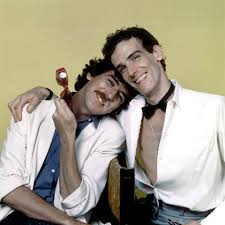
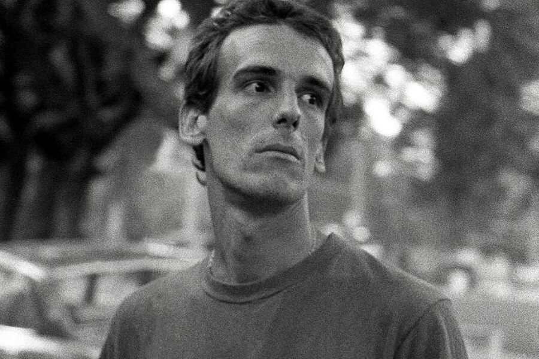

<!DOCTYPE html>
<html>
  <head>
    <title>PlatziGames</title>
    <meta charset="utf-8">
    <meta http-equiv="X-UA-Compatible" content="IE=edge">
    <meta name="viewport" content="width=device-width, maximum-scale=1.0, user-scalable=no">
    <link rel="stylesheet" href="https://fonts.googleapis.com/css?family=Lato:400,400i,700,700i|Oswald:400,500,600,700&amp;display=swap">
    <link rel="stylesheet" href="../css/ejercicio-sass.css">
    <script src="https://kit.fontawesome.com/552ebddad2.js"></script>
  </head>
  <body></body>
</html>
<main>
  <section class="perfil">
    <h2 class="perfil__nombre">Luis Alberto Spinetta</h2>
    <h3 class="perfil__titulo">Artista Legendario</h3><a class="perfil__boton" href="#">Seguir</a>
    <div class="estadistica--perfil">
      <div class="estadistica_elemento">
        <h3>12k</h3><span>Seguidores</span>
      </div>
      <div class="estadistica_elemento">
        <h3>1.7k</h3><span>Siguiendo</span>
      </div>
      <div class="estadistica_elemento">
        <h3>48</h3><span>Articulos</span>
      </div>
    </div>
    <div class="perfil__minibio">
      <h2>Acerca de Mi</h2>
      <h3>Artista multifacético con amplia trayectoria</h3>
    </div>
    <div class="ubicacion--perfil"><i class="fas fa-map-marker-alt"></i>
      <h2>Buenos Aires, Argentina</h2>
      <h3>27km Cerca</h3>
    </div>
    <div class="galeria">
      <h2>Mis Fotos</h2>
      <div class="galeria__foto-principal"></div>
      <div class="galeria__fotos-adicionales"></div>
    </div>
  </section>
  <aside class="articulos">
    <div class="articulo"><span class="articulo__categoria">Almendra </span>
      <h2 class="articulo__titulo">Plegaria para un niño dormido</h2>
      <p class="articulo__descripcion">Es una canción compuesta por el músico argentino Luis Alberto Spinetta, que integra -como track 6- el álbum Almendra I de 1969, de la banda de rock Almendra, álbum que ha sido ubicado en la sexta posición entre los mejores de la historia del rock argentino.</p>
    </div>
    <div class="articulo"><span class="articulo__categoria">Pescado Rabioso</span>
      <h2 class="articulo__titulo">Pescado 2</h2>
      <p class="articulo__descripcion">Es el segundo álbum de estudio del grupo Pescado Rabioso y el quinto con intervención decisiva de Luis Alberto Spinetta. Fue lanzado en 1973. Está considerado como el n.º 19 mejor álbum de la historia del rock argentino en la lista de la revista Rolling Stone.</p>
    </div>
    <div class="articulo"><span class="articulo__categoria">Spinetta/García.</span>
      <h2 class="articulo__titulo">Rezo por vos</h2>
      <p class="articulo__descripcion">Hasta el día de hoy es uno de los temas más conocidos y populares del rock argentino, y también, uno de los grandes éxitos más masivos de todos los tiempos. Entre los 2 músicos Luis Alberto Spinetta y Charly García son los mejores temas interpretados por ellos.</p>
    </div>
  </aside>
</main>